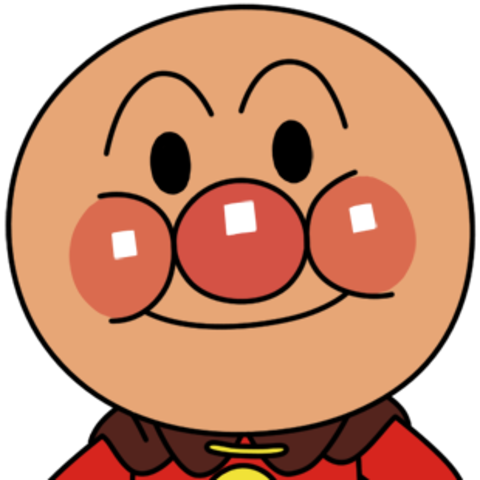

All about Anpanman
Anpanman (アンパンマン) is a Japanese children's superhero picture book series written by Takashi Yanase, running from 1973 until the author's death in 2013. The series has been adapted into an anime entitled Soreike! Anpanman (それいけ!アンパンマン, Let's Go! Anpanman), which is one of the most popular anime series among young children in Japan. The series follows the adventures of Anpanman, a superhero with an anpan (a red bean paste filled pastry) for a head, who protects the world from an evil anthropomorphic germ named Baikinman. Heavily merchandised, the Anpanman characters appear on virtually every imaginable children's product in Japan, ranging from clothes and video games to toys and snack foods. The series spawned a short-lived spin-off show featuring one of the popular recurring characters on the show, Omusubiman. Anpanman overtook Hello Kitty as Japan's top-grossing character in 2002, and has remained the country's top-grossing character as of 2019. Anpanman has sold over 80 million books as of February 2019, the franchise generated ¥4.5 trillion in total retail sales revenue by 2013.
Who is this mysterious Hero?
Anpanman was baked by his creator, Uncle Jam. A plucky young boy, he flys about Japan helping those in need of food by feeding them his head. Uncle Jam then bakes a new head to restore Anpanman's powers. However, should his head get wet or dirty, he becomes weak. Thus, his main villain Baikinman (Bacteria Man) is quite dangerous, with his virus powers a constant threat to Anpanman. Thankfully, Baikinman is happy playing pranks and messing with others, and is not focused on world domination.
The Gang
Anpanman is aided by his many friends during his adventures:- Cheese the Dog
- Shokupanman (White Bread Man)
- Currypanman (Curry Bread Man)
- The Hamburger Kid (alongside his trusty horse, Pickles)
- Omusbiman and Komusubiman (Riceball Man & Child Riceball)
- Ribbon Girl
The Stats
Who comes out on top in a battle royale?- Anpanman
- Kenshiro
- Superman
- Goku
- Spongebob
Hopefully you've learned something about the amazing Anpanman. He really is something, huh? Care to test what you learned? Click the button down below to take our quiz!